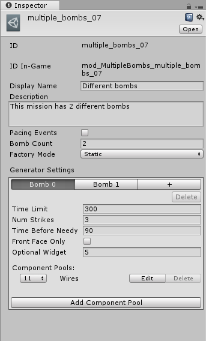

Missions
Missions with multiple bombs
To define a mission with multiple bombs add a component pool to your mission with nothing but the mod type Multiple Bombs (space included). Then set the count of this pool to the number of extra bombs you want the mission to have (e.g. if you set the count to 1 the mission will have 2 bombs).
If you create multiple component pools of this kind, the number of extra bombs the mission will have will be the sum of the counts of all of the component pools.
Different Generator Settings for each bomb
By default all of the bombs will use the generator setting of the first one, that is the one defined in the mission. However you can specify a different generator setting for each bomb. To specify the generator setting for a bomb add a component pool in your mission with nothing but the mod type Multiple Bombs:X:SettingsJSON, where:
- X is the index of the bomb that generator setting is for (starting from 0)
- SettingsJSON is a JSON serialized generator setting
Remember that the bomb indices are 0-based, but this only works for the second (index 1) and the following bombs, as the generator setting for the first bomb is considered to be the one defined in the mission.
Note that you don't necessarily have to define a generator setting for each bomb, bombs that don't have a generator setting defined for them will use the first bomb's generator setting.
Custom KMMission Unity Editor
Since writing and modifying the generator setting JSON string can be difficult, this is a custom Unity editor that will show a nice UI to modify the bomb count and the generator setting for each bomb in the Unity inspector (preview screenshot in the image). Additionally, it also allows you to set the mode for the Factory mod (leaving it to the default value will make the mission have normal behaviour).
To use it, download the script from the link below, then put it in the Assets/Editor/Scripts/Missions folder of your Unity project, replacing the existing one.
Examples
The mod type of a component pool that specifies the generator settings for a bomb would look like this:
Multiple Bombs:1:{"TimeLimit":600.0,"NumStrikes":6,"TimeBeforeNeedyActivation":180,"FrontFaceOnly":false,"OptionalWidgetCount":5,"ComponentPools":[{"Count":11,"AllowedSources":1,"ComponentTypes":[3],"SpecialComponentType":0,"ModTypes":[]}]}If you are generating a mission at runtime in a script, you can serialize a generator setting using the Newtonsoft.Json library included in the modkit:
KMGeneratorSetting generatorSetting = new KMGeneratorSetting();
//Set up the generator setting as you wish here
string generatorSettingJSON = JsonConvert.SerializeObject(generatorSetting); //Assuming that you added the using for the Newtonsoft.Json namespace